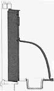
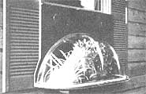

A Garden In The Window
How to build a small, window-mounted greenhouse for year-round growing, including diagram, instructions, specifications.
By the Mother Earth News editors
November/December 1987
Here's a window greenhouse that you can make in an afternoon.
Plant-quality daylight may be sparse inside your home, but you need only reach out for a full helping of the sun's radiance. If you have a conveniently located double-hung window (the type with a lower sash that slides upward), there's no reason why your indoor plants can't enjoy plentiful sunlight.
This miniature greenhouse is the perfect Saturday afternoon building project and-unlike the permanent commercially available designs-fits into the window opening like a portable air conditioner. Even if you're not much of a woodworker, assembly should be painless. All that's needed is a 42" X 46" section of 3/4" exterior plywood, a 7' length of 1 X 4 pine, several feet of tapered casing or drip cap molding, the assorted hardware called out in the illustration and a 46" acrylic window-well cover (the kind that's used to shield basement windows). As for tools, plan on using a drill, a screwdriver and a jigsaw (to cut the wood to shape).
Begin by opening the lower window sash completely and measuring the vertical distance from the sill to the sash's lower seal, then the horizontal distance between the side casings. If a storm window is installed, be sure to allow for its frame if necessary. Use our illustration as a cutting guide, but remember that your window's dimensions are the ones that count.
The idea is to make the mounting frame slightly smaller than the window opening; a tapered drip cap and foam weather stripping will complete the seal later. The lower platform has a 3 1/2" extension at the rear to which the frame is attached. The framing is also fastened from the front to the face board that helps support the acrylic dome.
Once the wooden parts are cut and assembled, you can secure the dome at its lower edge with wood screws. The upper seal is caulked with silicone compound, then the lower lip is covered with a length of 1/2" clear plastic tubing split lengthwise and sealed at its upper edge. Use primer and an exterior latex to paint the framing and the exposed portions of the plywood. Inside, paint to match the window trim or cover the face board with a snap-in quilted fabric to match the interior. The best way to attach the greenhouse to the window frame is with four sheet metal clip plates screwed to the edge of the side framing. These can be left flat or bent inward, if necessary, to catch part of the window track.
If you're just setting flats or plants in the sun, leave the platform as it is. You can, however, expand the use of your window garden by cutting an opening in the bottom to accommodate a planting tray of your choice. Lined with an insulation pad, it can hold individual potted plants or a bed of soil. When the tray is removed, the hole can be fitted with the cut-out wood section.
To take the design one step further, it's not too difficult to fashion a simple food dryer by cutting two 3" holes into the upper part of the face board and fitting them with round soft vents. Then-by stapling some nylon window screen to a frame tacked together out Of 3/4" X 3/4" strips of wood- you can make a drying tray to fit over the opening in the platform. If the lower window sash doesn't close freely, trim the mounting frame to whatever width is necessary, reset the drip cap and reposition the clip plates to allow it to do so. A closed sash (or one just cracked open) will speed the drying process.
Window Greenhouse Manufacturers
Four Seasons 5005 Veterans Hwy.
Holbrook, NY 11741
Jamaica, NY 11433
Lord & Burnham
Box 225 Irvington, NY 10533
Sunplace 6601 Amberton Dr.Baltimore, MD 21227
Sunbilt by Sussman 109-10 180th St.
Sunsystems 75 Austin Blvd.Commack, NY 11725
 ILLUSTRATIONS BY DON OSBY End view of installation. |
 The window greenhouse. |
 |